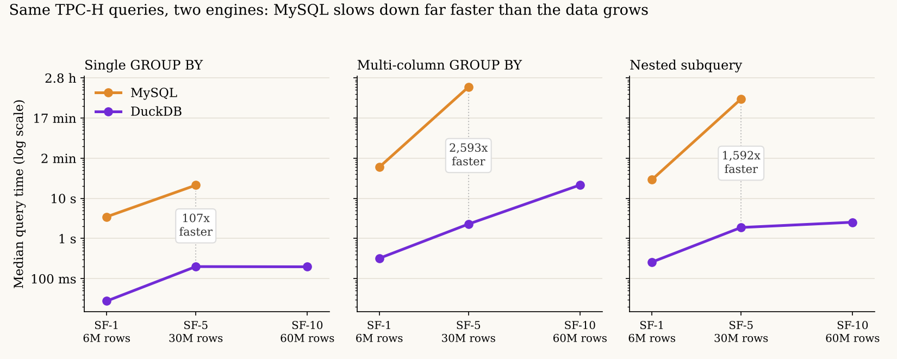
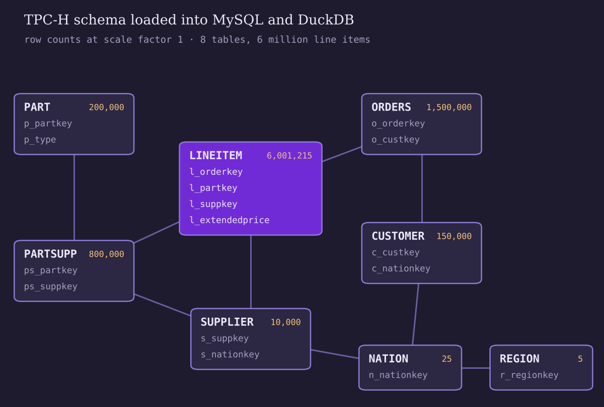
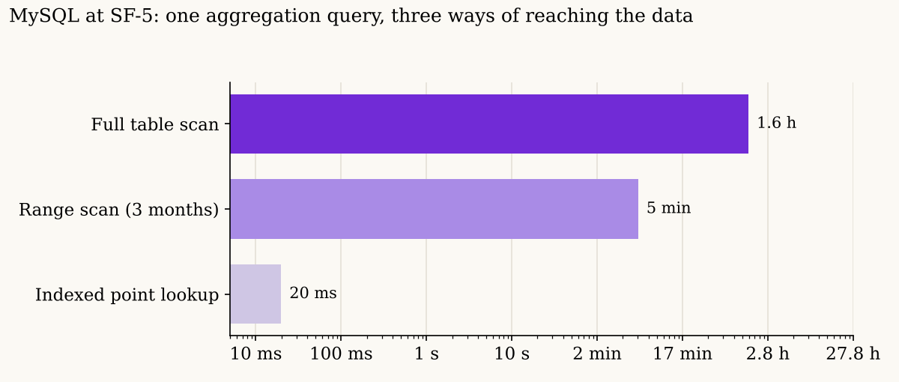

When Does MySQL Stop Being Good Enough for Analytics?

Most companies start with a regular transactional database like MySQL, and at some point their reports and dashboards get too slow. In this team project for COMP 8157 (Advanced Database Topics) at the University of Windsor, we measured exactly where that point is, by running the same analytical queries on MySQL, a row-store built for transactions, and DuckDB, a column-store built for analytics, at three data sizes.
The question: at what data size and query shape does a row-store database stop being good enough for analytics, compared to a column-store? And does reshaping the data into a star schema help either engine?
Methods
Data and scale
We used TPC-H, the standard decision-support benchmark, generated at three scale factors: SF-1 (about 6 million line items), SF-5 (about 30 million) and SF-10 (about 60 million). The raw data was loaded into both engines in its normal transactional form.

From transactions to analytics
We then transformed the data, identically in both engines, into an analytics-ready star schema (a fact table with dimension tables) plus a wide denormalized view, and measured how long that took and how much disk it used. This let us test both layers: the original transactional schema and the new analytical one.
The query matrix
Every combination was run several times: 2 engines, 2 schema layers, 3 scale factors, 3 query shapes (single GROUP BY, multi-column GROUP BY and a nested subquery) and 3 ways of reaching the data (full table scan, an indexed point lookup and a three-month range scan). For each run we recorded latency, peak memory and CPU, and reported the median. This is the heaviest query shape, on the transactional schema:
SELECT s.s_name, n.n_name, YEAR(l.l_shipdate) AS ship_year, SUM(l.l_extendedprice * (1 - l.l_discount)) AS revenue
FROM lineitem l
JOIN supplier s ON l.l_suppkey = s.s_suppkey
JOIN nation n ON s.s_nationkey = n.n_nationkey
GROUP BY s.s_name, n.n_name, ship_year
ORDER BY revenue DESC
LIMIT 100;My part: the query executor
I led the query execution and metrics layer, which runs the whole matrix and records every trial. The trickiest part was adding the index-mode filter to each query automatically. Two earlier approaches broke on the nested subquery, because the filter landed in a block that couldn't see the right columns. The final version targets the block that actually scans the fact table:
INDEX_MODE_PREDICATES = {
"full_scan": "",
"indexed_point_lookup": " AND l_orderkey = 1",
"range_scan": " AND l_shipdate BETWEEN DATE '1996-01-01' AND DATE '1996-03-31'",
}
def _apply_index_mode(sql: str, index_mode: str) -> str:
predicate = INDEX_MODE_PREDICATES[index_mode]
if not predicate:
return sql
# Anchor on the FIRST GROUP BY, which always belongs to the block that
# actually scans the base fact/lineitem table in every query template
# in this matrix (even nested_subquery's outer WHERE references columns
# from the derived table, not the base table, so injecting there would
# produce an unresolvable column reference). Only look for an existing
# WHERE within that same block (before the first GROUP BY) - a WHERE
# appearing later, in an outer/sibling scope, doesn't apply here.
condition = predicate.strip()
gb_match = re.search(r"\bGROUP BY\b", sql, re.IGNORECASE)
if not gb_match:
return sql
prefix = sql[:gb_match.start()]
if re.search(r"\bWHERE\b", prefix, re.IGNORECASE):
return sql[:gb_match.start()] + f"{condition}\n" + sql[gb_match.start():]
return sql[:gb_match.start()] + f"WHERE 1=1 {condition}\n" + sql[gb_match.start():]Results
DuckDB scales, MySQL falls behind fast
| Data size | MySQL | DuckDB | DuckDB faster by |
|---|---|---|---|
| SF-1 (about 6M line items) | 59.9 s | 0.32 s | 187x |
| SF-5 (about 30M line items) | 5,935 s (about 99 min) | 2.29 s | 2,593x |
| Slowdown from SF-1 to SF-5 | about 99x | about 7x |
At SF-5, DuckDB was about 2,600 times faster on heavy aggregation. Five times more data made MySQL about 99 times slower, while DuckDB slowed down only about 7 times, close to the growth of the data itself.
How you reach the data matters even more than the engine

In MySQL, the same query went from about 99 minutes to about 0.02 seconds when it could use an index to find a single order, a difference of roughly 300,000 times. For a row-store, good indexing and narrow filters matter more than anything else.
The star schema did not always help
| Data size | MySQL | DuckDB |
|---|---|---|
| SF-1 | 8.2 min | 2.1 s |
| SF-5 | 2.4 h | 7.2 s |
| SF-10 | not completed | 11.0 s |
The star schema made DuckDB about 2.2 to 2.4 times faster on single GROUP BY and nested subqueries, but slightly slower on the multi-column GROUP BY. MySQL gained only about 1.1 times. Building it took seconds in DuckDB and hours in MySQL, although in MySQL it also shrank the on-disk size at SF-5 from about 8.18 GB to 6.66 GB. The right design depends on both the engine and the queries you run.
Limitations
MySQL at SF-10 was not completed: the roughly 22 GB of raw data plus MySQL's on-disk footprint went over our machine's space during loading. Our report documents this instead of estimating the missing results.
My contributions
This was a four-person team project (Rabiya Javed Farooq, Purab Singh Mohan, Sneha Gunturu and me), supervised by Dr. Andreas S. Maniatis. I was the lead contributor, with about 20 of the project's 32 commits:
- Team coordination: planned the phases, split the tasks, tracked deadlines and merged work into the main branch.
- Query executor and run configuration: runs the full matrix and records latency, memory and CPU for every trial.
- Smoke tests: quick checks that the configuration and query matrix are valid before starting runs that take hours.
- Ran the benchmarks: all DuckDB runs and all MySQL runs at SF-1 and SF-5. Single MySQL queries at SF-5 took over 90 minutes, so I backed up results between runs.
- Analysis, charts and documents: the median summary, all result charts, the pre-proposal, the proposal (IEEE LaTeX and slides), the midterm report, and co-authoring the final report.
- Python
- MySQL 8.0
- DuckDB
- SQL
- Star schema
- TPC-H
- Pandas
- Matplotlib
- pytest